Note: SQL Server Management Studio (SSMS) is required to be installed on your machine or an accessible network server for you to follow along with this guide
Jump to: Database Restore Procedure
Installing a Fresh Database
-
Open \\jove\Product_Development\Installations\JustWare in File Explorer
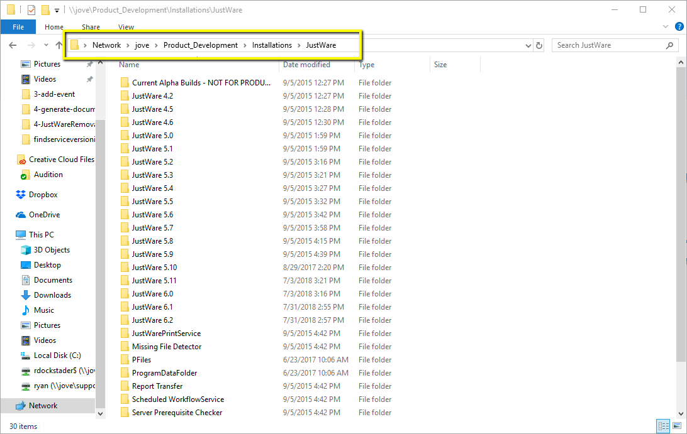 -
Select the Version you want to install (if you're not sure, using the latest version is always a good idea)
The Latest version at the time this was created is 6.1.3.0, so i'll go into JustWare 6.1 -> 6.1.3.0
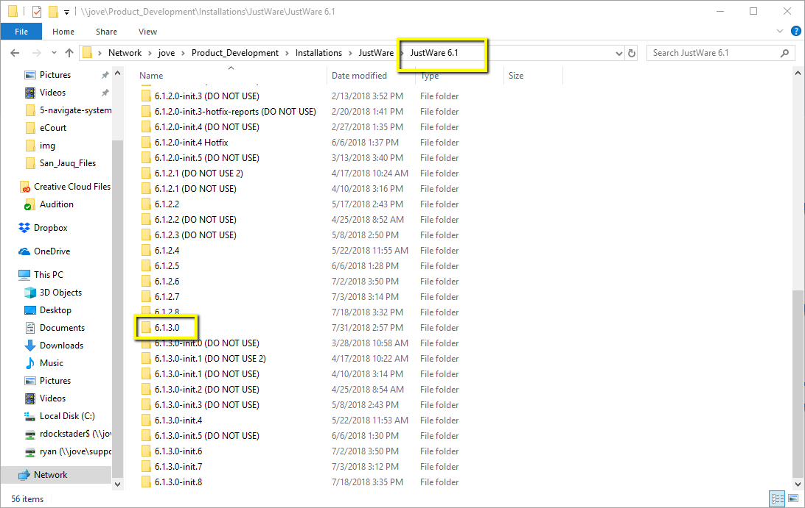 -
Copy the JustWare Database Server Install.exe to your local computer and run it
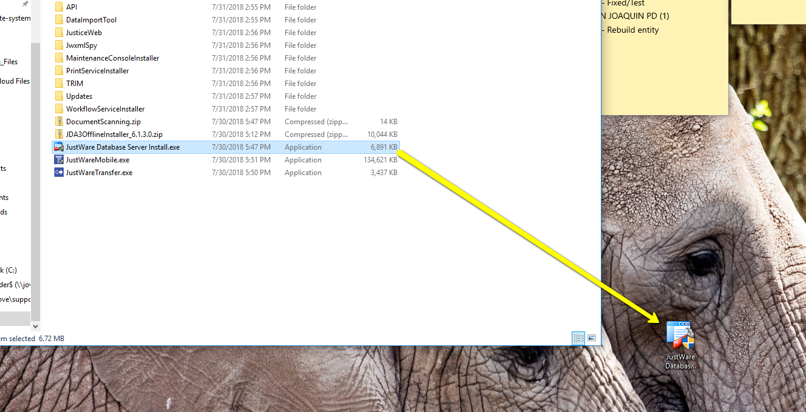 -
Select Use Network Instance, and fill in the server name for your install, then hit next
Note: In Support, Zeppelin is used for test databases that do not contain customer data while Zombie is used for any database that contains customer database
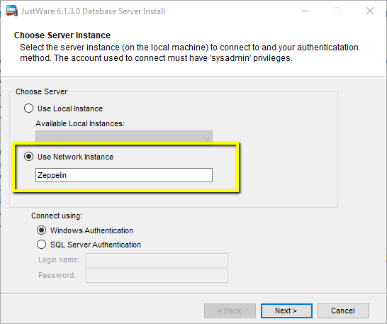 -
Select Create a new blank Database, and input a name. A name for a test database on Zeppelin should generally consist of your initials and the word "test". I.E: RD_Test. Customer Databases on zombie should consist of your initials, the customer name, and the case number you're using the database for. I.E. RD_Guam_18_1
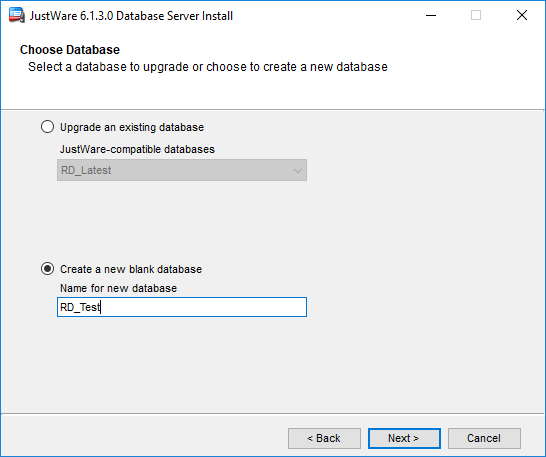 -
On this page, we see the data and log file location of the database. Generally the default location should be fine, unless you get an error. If you get an error here, consult with your trainer or the escalated team.
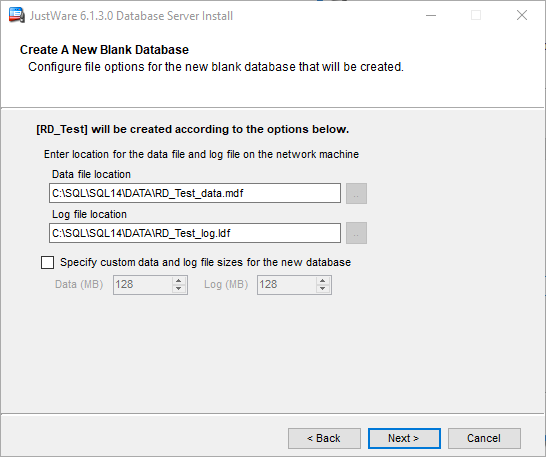 -
Next the SQL user will need to be added. the username here must be 'uinta'. The password doesn't matter, since it will prompt us to use the existing login on the database, to which we'll answer yes.
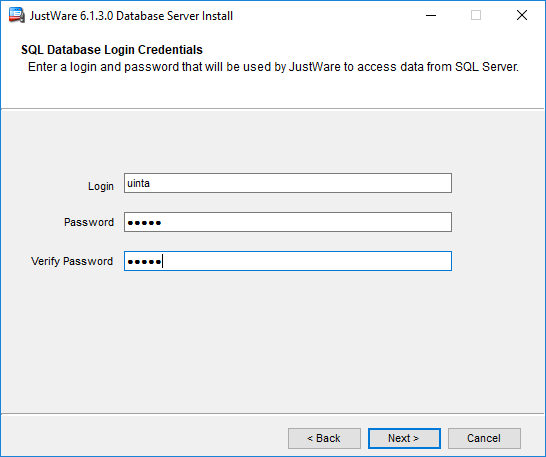 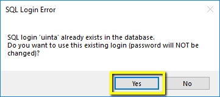 -
Set the jwadmin account password. Set this to whatever you would like. It can be changed in the JustWare Maintance console at a later time if needed.
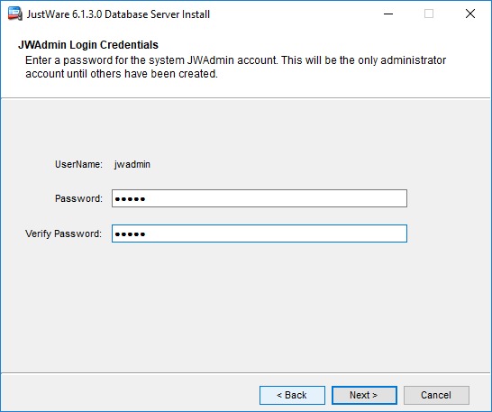 -
In this page the active directory information will need to set. the netBIOS name is the short domain name. I.E. JTI the Fully Qualified Domain Name (FQDM) is the full version of the domain, I.E. JTI.int
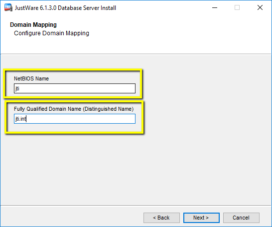 -
Next the Database will begin to install
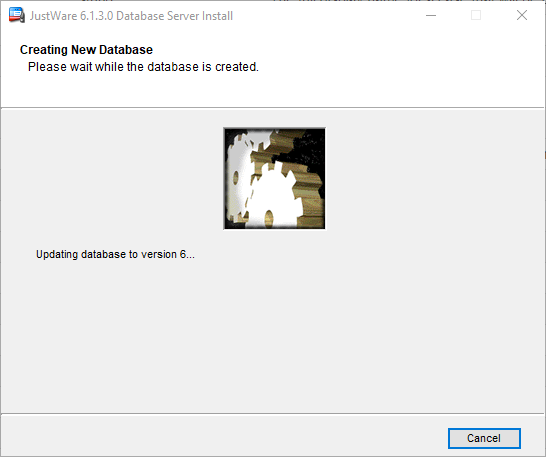 -
Once that finishes, hit the finish button and you should have a database ready to go!
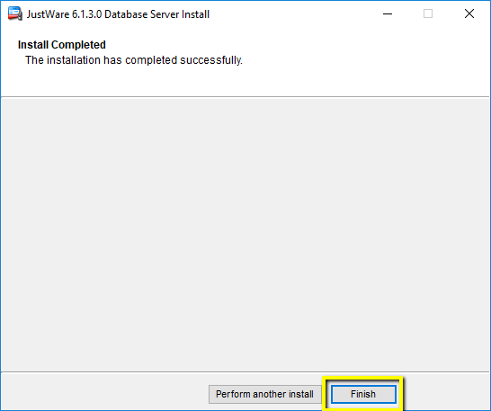
Restoring a JustWare Database
-
Move the file from it's currently location (likely on the FTP) to \\zombie\Sql14Bkp
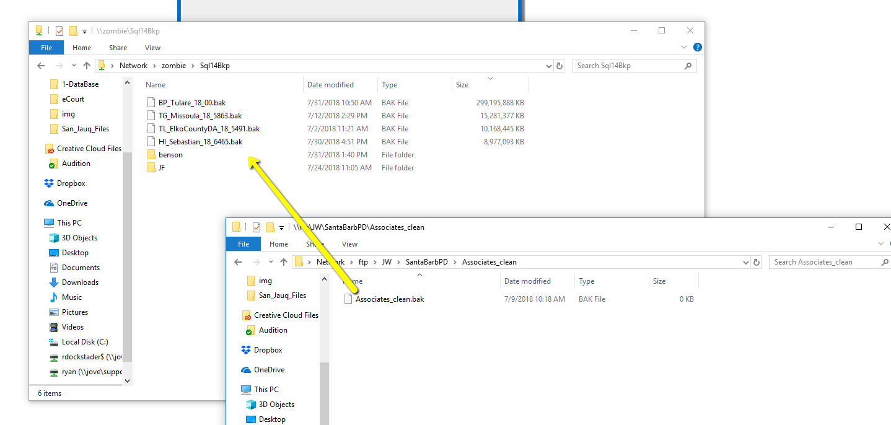 -
Rename to the datbase file to Initials_AgencyName_Case_ID. IE. HI_Sebastian_18_6465.bak
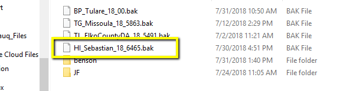 -
Launch SSMS and connect to Zombie (for databases with customer data)
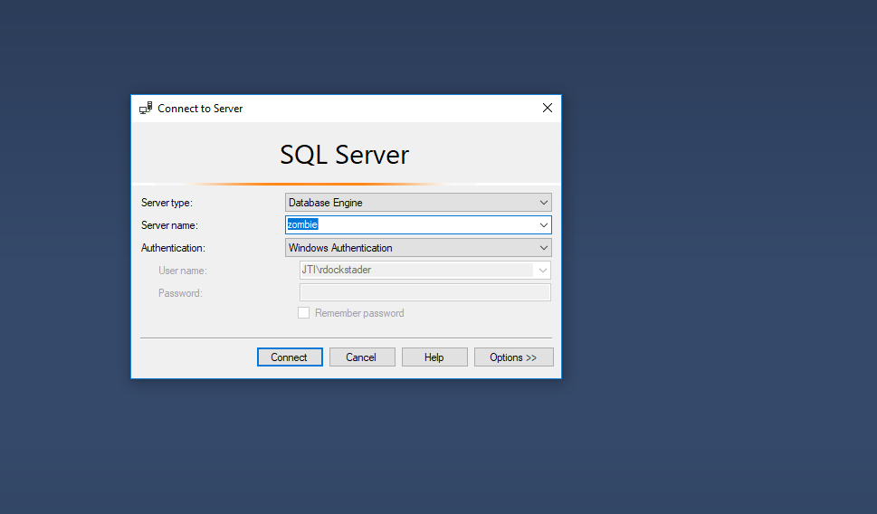 -
Run the restore database stored procedure, filling out the .bak file name and the database name (the database name should be the same as the .bak file, without the .bak on the end)
Download the Script 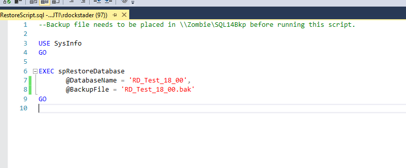 -
Once the script finishes, your database should be ready to use with a JustWare install.